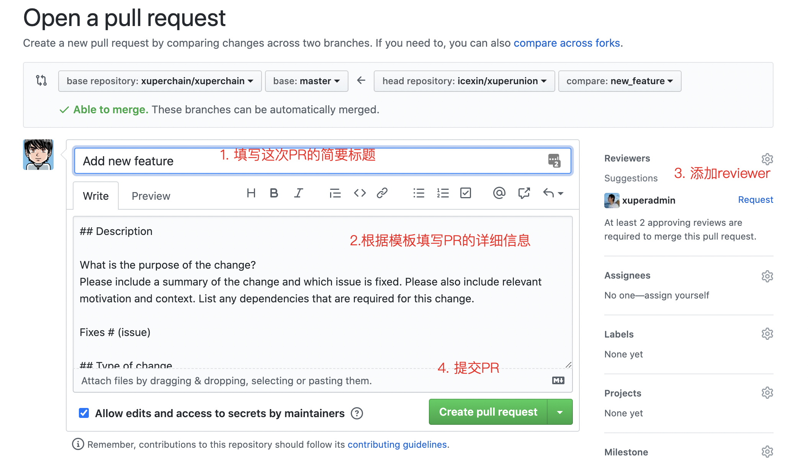
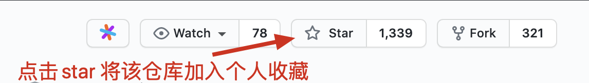

代码提交指南¶
XuperChain 欢迎任何形式的贡献（包括但不限于贡献新feature，完善文档，参加线下活动，提Issue)。
对于想给 XuperChain 贡献代码的开发者，在这里我们以给 https://github.com/xuperchain/xuperchain 这个仓库提交代码为例来详细解释代码提交流程
Clone代码到本地¶
假设fork完之后的代码仓库路径为 https://github.com/icexin/xuperchain
git clone https://github.com/icexin/xuperchain.git
之后再设置一个upstream的remote地址，方便我们同步原始仓库地址的更新
git remote add upstream https://github.com/xuperchain/xuperchain.git
同步代码并建立新分支¶
我们每次要提交PR的时候都要新建一个分支，这样可以同时开发多个feature，分支基于upstream的master建立
# 拉取上游的最新代码
git fetch upstream
# 建立新分支
git checkout -b new_feature upstream/master
之后我们就可以在这个分支上开发我们的代码了
提交代码¶
当我们的代码写完之后就可以提交了，注意我们这里提交的remote是origin，也就是自己的代码仓库 https://github.com/icexin/xuperchain
$ git push origin new_feature
Counting objects: 3, done.
Delta compression using up to 2 threads.
Compressing objects: 100% (3/3), done.
Writing objects: 100% (3/3), 286 bytes | 286.00 KiB/s, done.
Total 3 (delta 2), reused 0 (delta 0)
remote: Resolving deltas: 100% (2/2), completed with 2 local objects.
remote:
remote: Create a pull request for 'new_feature' on GitHub by visiting:
remote: https://github.com/icexin/xuperunion/pull/new/new_feature
remote:
To https://github.com/icexin/xuperunion.git
* [new branch] new_feature -> new_feature
创建PR¶
提交完之后，一般有个类似 https://github.com/icexin/xuperunion/pull/new/new_feature 这样的地址，在浏览器打开这个地址就跳转到创建PR的页面

持续提交修改补丁¶
在review的过程中，会有人提出修改意见，继续在new_feature分支上添加commit，再push，就会在当前的PR上进行更新
git add -u
git commit -m 'some fix'
git push origin new_feature
合入代码¶
如果代码的CI过了，reviewer也没有意见就会合入代码，代码就进入了master分支，之后就可以删除本地和远端的new_feature分支
git branch -D new_feature
注解
你也可以点击 star 收藏该仓库以便后续快速找到该仓库
